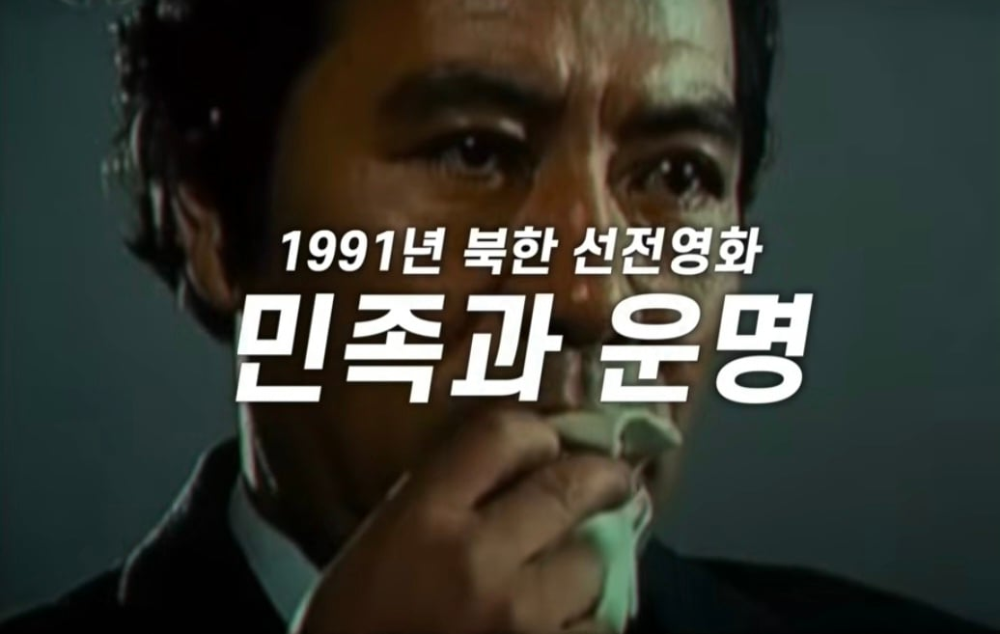

1991년 북한 선전영화로나온
"민족과 운명" 내용이 판박이라함
탈북자 유튜버 한송이는 리메이크된건가 싶을정도라함

1991년 북한 선전영화로나온
"민족과 운명" 내용이 판박이라함
탈북자 유튜버 한송이는 리메이크된건가 싶을정도라함
영화 자체가 ㅇㄱㄸ라고 거품무는 놈들 있던데
서울의 봄, 남산의 부장들 후기는 개드립에 잘만 올라왔다
전두환 긍정 영화 나오면 과연 이렇까?
그.. 잘 가고 클리앙에서나 놀아라 ㅋㅋㅋㅋ
아니 4렙찍을 정도로 여태까지 어케 살아남은 거냐 ㅇㄱㄸ중에 ㅇㄱㄸ를 바로 박아버릴 패기인데 ㄷㄷ
ㅄ
잘가라 틀니앙
ㅂㅅ
수호단들 개 좆되네 진짜 ㅋㅋㅋㅋㅋㅋㅋㅋㅋㅋ
틀포티냄새 우욱 눈도 침침해져서 게시판 구분도 못하는
정떡이나 물어뜯고사는 개병신같은 좌우양측 정치병 포티틀딱들의 논란과는 별개로 그냥 평범하게 지루한 영화였음
영수코인 아니었으면 딱히 화제까지 오를만한 퀄리티는 아님. 근현대사 대역or역사물은 최소 커트라인이 서울의봄 정도는 나와야한다고 본다
최소컷 너무빡센데 ㅋㅋ
예를들어 비슷한 시대배경인 독립운동~일제강점을 배경으로 삼은 영화를 봤을 때
밀정/동주 이 두 작품은 수작임. 시대배경을 녹여내면서도 새로운 각본을 자연스럽게 녹여냈고 연출도 모난곳이 없음.
반면 암살/하얼빈 이 두작품은 졸작임. 시대상에 묻어갈려고하는 애국코인을 노린 어설픈 퀄리티였고, 특히 하얼빈은 영화가 아니라 감독 개인의 영상미 포트폴리오 느낌 이었음
뭔가 객관적으로 말하긴 애매한데 이정도 느낌으로 구분함
밀정 진짜 수작임..
ㄹㅇ 영화로썬 별로임. 타자기 추격씬 하나 건진듯
이것도 그냥 넘어가는데 배재고는 왜 야구 접으라고한거임??
스포츠 선수가 학교 이름 달고 극단적 정치 성향 드러내는 명백한 도발을 시전한 거랑
영화가 허구고 여론에서 얘기하는 해석에 동의 못한다는 감독피셜 있는 영화 찍는 거랑 똑같다고 생각해? ㄹㅇ루?
배우가 역사드립쳐서 문제면 본문마냥 리뷰조차 지금 살생부 만들어서 인생 조지려고들 하고 있잖음 ㅋㅋㅋ 정작 배재고는 애들이라며 쉴드 치고 신상파고들 때 미친놈들이라고 욕하던 거랑 똑같음?
혹여나 지역이나 정치로 정사판드립 칠까봐 미리 말해두는데, 학생이라 해도 대구 출신 상대 운동선수한테 통구이드립치면 평생 스포츠는 남 이름 달고 하면 안된다고 생각함 ㅅㄱ
일단 두 케이스가 다른 건 맞는데
영화가 허구고 해석에 동의 못한다는 감독피셜이 있으면 실존인물로 막 만들어도 됨?
지금 영화가 명백히 고인이 된 실존인물의 명예를 음모론으로 훼손하고 있는데?
배재고와 같이 언급되는 이유는 '정치'사상을 통한 '잘못'을 저질렀다는 점이 같기 때문임
배재고도 정치사상으로 도발을 한 잘못이 있고
암살자들 감독은 음모론으로 고인의 명예를 실추한 잘못이 있음
댓글 좀 나눠서 달지 좀 마라 시벌 존나 짜증나네
1.(윗댓)
영화같은 스크린 미디어는 예전부터 선전도구로 쓰여옴.
니 말대로 '옳음'에 대한 걸 추종하자면 이미 부정선거에 대한 음모론 영화가 나왔을 때, 나라에서 개작살을 냈어야 함(부정선거 영화 얘기해서 정치적으로 해석할까 싶어서 덧붙이자면, '옳음'이란 건 잣대가 달라질 수 있기 때문에 반례로 든 것 뿐임)
근데 그런 표현의 자유를 검열하지 않는 이유는 한국이 민주주의 사회라 표현의 자유를 존중하기 때문임.
그리고 그것이 옳지 못하다 생각하면 대중이 뜻을 표현하는 거고, 그렇기에 애들은 선수 생활 문제 생긴 거고 감독이나 배우들도 영화 판매 및 커리어 문제 생기는 것 뿐임. 표현의 자유는 책임과 별개니까.
2.(아래댓글) 정치사상으로 잘못을 저질렀다는 게 엄연히 다른 잣대가 적용되어야 하는 이유는, 스포츠에서 '상대 선수를 도발하고자 명백한 혐오사상을 이용함' 과 예술작품에서 '정치적 견해가 들어간 역사적 사실의 재해석'이 엄연히 다르기 때문임.
도발에 대해서 따진다면, '스포츠는 룰이 공정해야 한다'는 동서고금을 막론하고 통용되는 상식을 무시할 거임?
예술작품에 대해서는, '정치적 견해'는 작품을 해석하는 관점에 따라 다르게 해석될 수 있기 때문임. 무다구치 렌야는 한국인에게 고마운 사람이지만 일본인에겐 수치스러운 졸장이듯이, 이순신도 한국인에겐 영웅이지만 일본인에겐 학살자인 거고. 근데 그렇다고 일본인이 이순신을 부정적으로 묘사하는 창작 자체를 금지해야 함? 그렇다면 태권더 박 같은 작품에 대해서는 왜 다들 낄낄거리고 넘어간 거임?
욕질하지말고
요약하자면 표현의자유가 있다,
정치사상의 잘못은 다른 잣대가 작용할수 있다
는 거네
더 길게 말 할 가치를 못 느끼겠다 ㅂㅂ
내용 지 좆대로 요약하고 시벌에 긁혀서 정신승리 쳐하는 거 보면 개병신빡대가리 맞네 ㅅㄱ
응 너는 그냥 가치가 없어, 여러가지로
이래서 정치병자들이 정신병자 취급받지
하긴 뭐 정신질환 환자들이 병식이 없는 편이긴 해 ㅋㅋㅋㅋ
누구랑 싸우는 중임??
아 개빡대가리같은 병신댓글 니가 단 거 아니었음?
댓글 달고 있는데 삭제되길래 너인 줄
미안 댓삭함
ㄹㅇㅋㅋ
머 정부서 기업지목해서 불매하라고하는데..
창작도 아니였어?
정치 다 재끼고 그냥 병신마냥 지루해서 보기 힘들었음
이렇게 계속 들고다니는 애들덕분에 손익분기점은 채우려나
재미라도 있었음 여론 반반갈꺼같은데 재미가 좃도 없으니 더 활활타는거 ㅋㅋ
그리고 픽션이다 허구라 처음에 말해놓고 마지막에 실제 저격영상 트는건 ㄹㅇ 짜침
차라리 북한 소행처럼 보이게 하다가 후반부에 다른 관점으로 의심이 들게 만들던가
무슨 그냥 대놓고 한쪽으로 치우치니 좃같은 영화가 나온거지 ㅋㅋ
스벅가자 한 미성년자들은 열심히 조지고
대놓고 의도가 드러난 똥찌꺼기를 만든 인간들은 수호하는 세상임
??? : 어딜감히 우리의 위대한 민주주의랑 비교를
간첩이 따로없네 그냥 ㅋㅋ
뭐야 빨갱이영화였음?
....자살이 아니라 측근이었던 누군가가 밀어버린게 아닐까 하는 스토리로 영화가 만들어지면 과연?
표현의 자유로 정당화될 수 없는 패륜 명예훼손 범죄행위라고 거품물겠지
ㅋㅋㅋ그니깐 픽션이면 픽션이라고 해야지
지들끼리 진실이 어쩌니 하고 니가만들면 왜곡이니 하니깐 ㅈ같은거지